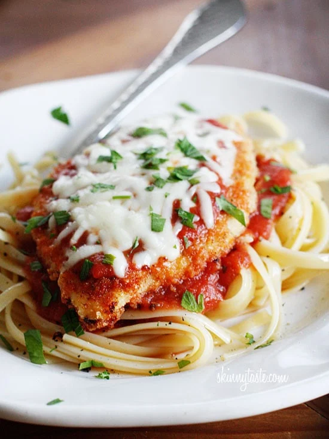

Chicken Parmesan

Description
Chicken Parmesan started way back with Eggplant Parmigiana in Campania and Sicily in Italy.
You deep fry eggplant and then add cheese and tomato sauce. Then bake it, and enjoy. At some
points, cooks in North America, and other regions of the world with large Italian immigrant
populations, realized that chicken would be an excellent alternative to the eggplant and Chicken
Parmigiana was born.
Ingredients
- 4 skinless, boneless chicken breast halves
- salt and freshly ground black pepper to taste
- 2 large eggs
- 1 large pank bread crumbs, or more as needed.
- 3/4 cup grated Parmesan cheese, divided.
- 2 tablespoons, all-purpose flour, or more if needed.
- 1/2 cup olive oil for frying,or as needed.
- 1/2 cup prepared tomato sauce.
- 1/4 cup fresh mozzarella, cut into small cubes.
- 1/4 cup chopped fresh basil.
- 1/2 cup grated provolone cheese.
- 2 teaspoons olive oil.
Steps
- Preheat an oven to 450 degrees F (230 degrees C).
- Place chicken breasts between two sheets of heavy plastic (resealable freezer bags work well)
on a solid, level surface. Firmly pound chicken with the smooth side of a meat mallet to a
thickness of 1/2-inch. Season chicken thoroughly with salt and pepper.
- Beat eggs in a shallow bowl and set aside.
- Mix bread crumbs and 1/2 cup Parmesan cheese in a separate bowl, set aside.
- Place flour in a sifter or strainer; sprinkle over chicken breasts, evenly coating both sides.
- Dip a flour-coated chicken breast in beaten eggs. Transfer breast to the bread crumb mixture,
pressing crumbs into both sides. Repeat for each breast. Let chicken rest for 10 to 15 minutes.
- Heat 1/2 inch olive oil in a large skillet on medium-high heat until it begins to shimmer. Cook
chicken in the hot oil until golden, about 2 minutes per side. The chicken will finish cooking
in the oven.
- Transfer chicken to a baking dish. Top each breast with 2 tablespoons tomato sauce. Layer each
chicken breast with equal amounts of mozzarella cheese, fresh basil, and provolone cheese. Sprinkle
remaining Parmesan over top and drizzle each with 1/2 teaspoon olive oil.
- Bake in the preheated oven until cheese is browned and bubbly and chicken breasts are no longer pink
in the center, 15 to 20 minutes. An instant-read thermometer inserted into the center should read at
least 165 degrees F (74 degrees C).